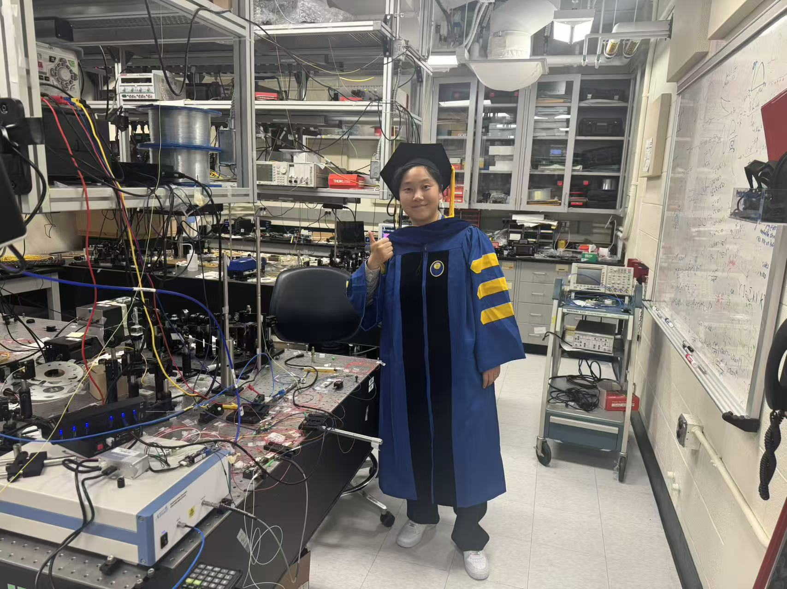

{% include base_path %}

PhD graduation

<div style="display: flex; align-items: flex-start; gap: 25px; margin-bottom: 35px; position: relative;">

  <div style="width: 140px; flex-shrink: 0;">
    
  </div>


